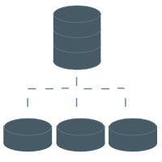

<p class="text-secondary-500 subtitle-lg">
    Please select one the option to import files
</p>
<div class="grid grid-cols-4 gap-10 mt-7">
    <div class="shadow-3xl text-center p-5 rounded-2xl">
        
        <p class="mt-3 subtitle-md subtitle-md">Unstructured</p>
    </div>
    <div class="shadow-3xl text-center p-5 rounded-2xl">
        
        <p class="mt-3 subtitle-md subtitle-md">Structured</p>
    </div>
    <div class="shadow-3xl text-center p-5 rounded-2xl">
        
        <p class="mt-3 subtitle-md subtitle-md">Transcript</p>
    </div>
    <div class="shadow-3xl text-center p-5 rounded-2xl">
        <div class="flex flex-wrap h-20">
            
            
            
            
            
        </div>
        <p class="mt-3 subtitle-md subtitle-md">Social Media</p>
    </div>
    
  </div>